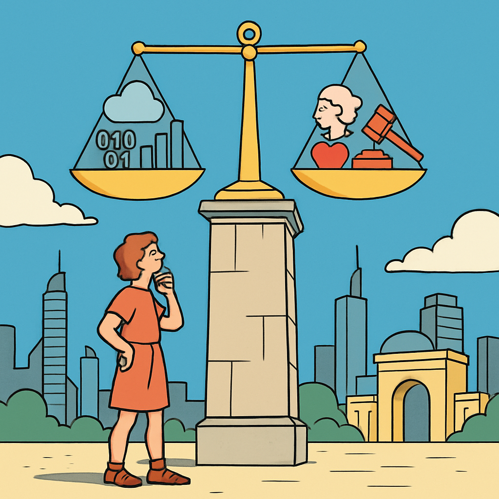

Microlearning
Digitale Nachhaltigkeit ist nicht nur eine technische Frage – sie hat tiefgreifende ethische Dimensionen. Von geplanter Obsoleszenz über globale Ungerechtigkeit bis hin zu politischen Regulierungen: Als IT-Fachperson bist du mittendrin.

Die Right-to-Repair-Bewegung kämpft dagegen:
- Konsument:innen sollen das Recht haben, ihre Geräte selbst zu reparieren
- Hersteller sollen Ersatzteile und Reparaturanleitungen bereitstellen müssen
- In der EU gibt es bereits erste Gesetze: USB-C-Pflicht, Ökodesign-Verordnung, Recht auf Software-Updates
Digitale Gerechtigkeit – die unsichtbare Seite:
- Rund 80% des weltweiten E-Wastes landen in Entwicklungsländern – oft unter gesundheitsschädlichen Bedingungen recycelt
- Die Rohstoffe für unsere Geräte (Kobalt, Lithium, Coltan) werden häufig unter menschenunwürdigen Bedingungen abgebaut
- Der ökologische Fussabdruck der Digitalisierung trifft diejenigen am härtesten, die am wenigsten davon profitieren
Tat / Einstellung
Kenne deine Rechte: Als Konsument:in hast du mehr Einfluss, als du denkst – aber nur, wenn du weisst, was dir zusteht.
Aufgabe
- Recherchiere: Welche Rechte hast du in der Schweiz bezüglich der Reparatur deiner Geräte?
- Suche nach dem Stichwort «Gewährleistung» und «Garantie» – was ist der Unterschied?
- Finde heraus: Gibt es in der Schweiz ein Recht auf Reparatur? Was plant die EU, und wie betrifft das die Schweiz?
- Prüfe: Bietet der Hersteller deines Laptops oder Smartphones Ersatzteile und Reparaturanleitungen an?
Tipp: Schau dir die Webseiten von iFixit und dem BAFU (Bundesamt für Umwelt) an – dort findest du nützliche Informationen.
Reflexion
Wer trägt die Verantwortung für nachhaltiges Handeln in der IT – Unternehmen, Politik oder du selbst?
Die Antwort ist: alle drei – aber auf unterschiedliche Weise. Unternehmen tragen Verantwortung für Produktdesign, Lieferketten und Transparenz. Die Politik muss Rahmenbedingungen schaffen (Gesetze, Standards, Anreize). Und du als Fachperson und Konsument:in hast die Macht der täglichen Entscheidungen: Was kaufst du? Wie lange nutzt du es? Wie entwickelst du Software? Nachhaltigkeit entsteht nicht durch eine einzelne Massnahme, sondern durch das Zusammenspiel aller Akteure.
Challenge
Erstelle deinen persönlichen «Digital Sustainability Pledge» – 5 konkrete Vorsätze für nachhaltigeres digitales Arbeiten und Leben.
Dein Pledge sollte Vorsätze aus verschiedenen Bereichen enthalten:
- Geräte: z. B. «Ich nutze meinen Laptop mindestens 5 Jahre»
- Software: z. B. «Ich achte auf effiziente Algorithmen in meinen Projekten»
- Daten: z. B. «Ich lösche regelmässig unnötige Cloud-Daten»
- KI: z. B. «Ich nutze KI nur, wenn es wirklich einen Mehrwert bietet»
- Community: z. B. «Ich trage zu Open-Source-Projekten bei»
Schreibe deine 5 Vorsätze auf und teile sie mit einer Kollegin oder einem Kollegen.